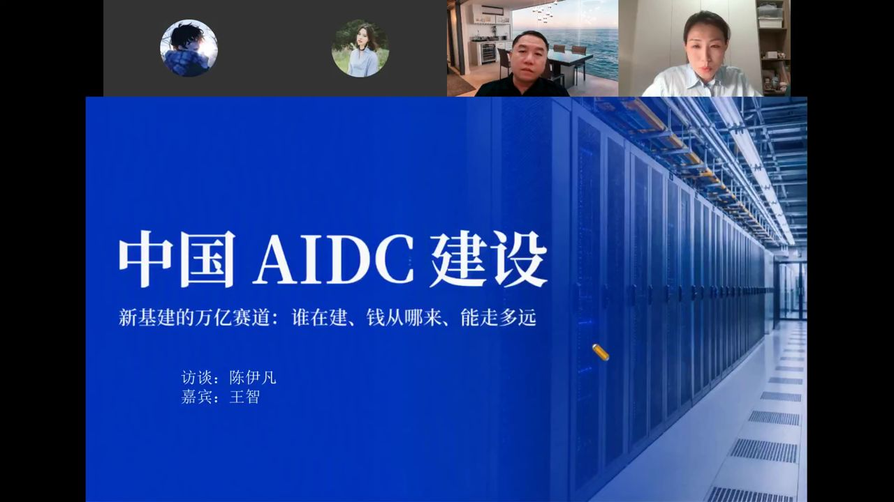
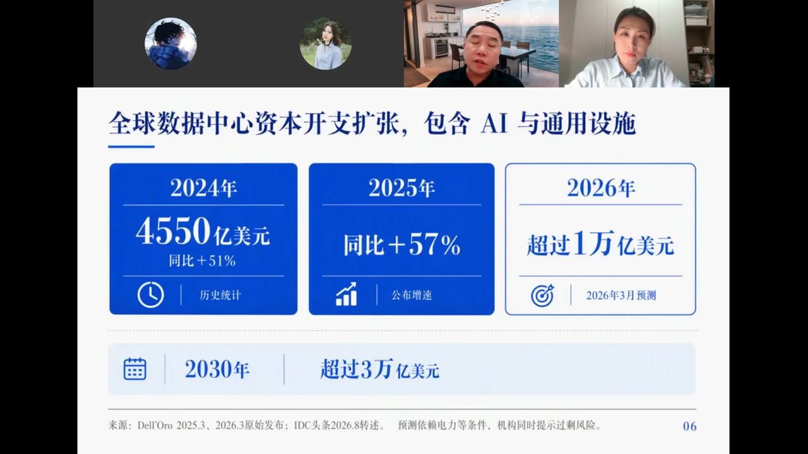
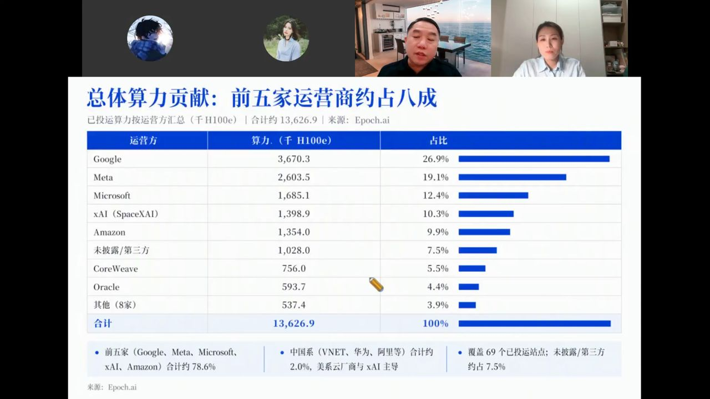
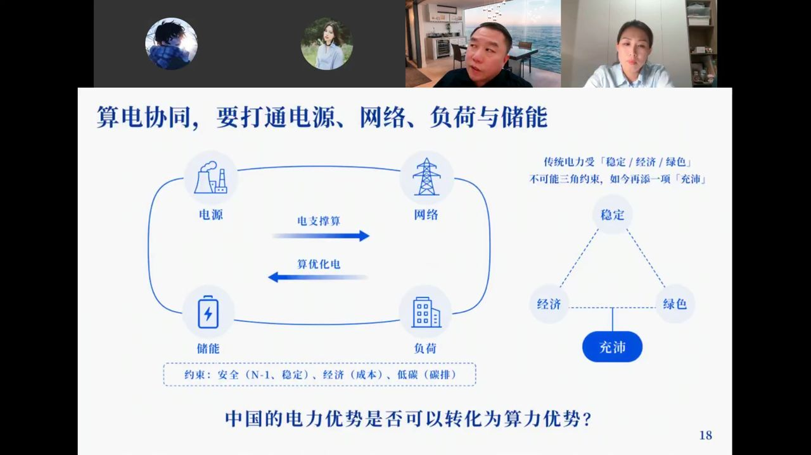
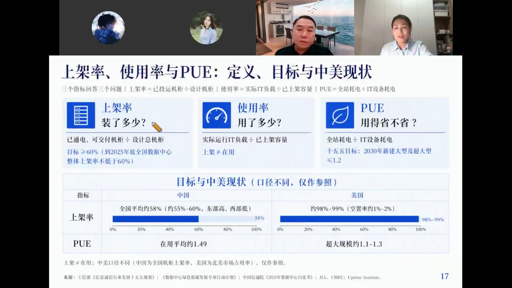

本轮全球AI数据中心扩张速度在基建史上非常少见，三个关键词：钱多、电紧、分化大。 本次对谈系统梳理了全球AIDC资本开支、算力布局与中美差异，中国政策推动路径， AIDC的六大组成部分与成本结构，以及中国电力优势能否转化为算力优势等核心问题。

以英伟达超节点为例：72张GPU卡，功率120kW，而传统机柜只有6kW左右——高了好几个量级。
AIDC与传统IDC的本质区别在于机柜功率密度，是传统数据中心的10-100倍。因此有三大配套必须同步设计：
核心认知：AIDC已经从单张GPU变成了一个小系统集群。任何一环拖后腿，整个昂贵的算力都发挥不出来。

需求端（最底层驱动力）：
供给端（严重短缺）：
预期端（线性外推）：
60-70%是确定需求，30-40%是提前布局
大部分是已签约的客户需求（长单锁量），但因为供给短缺，厂商必须提前抢产能、抢电指标、抢土地，这部分形成了冗余的提前布局。
根据86个站点的统计：
但功耗增长和投运建筑增长，都远低于算力增长。
结论：本轮算力扩张主要不是靠建新站点，而是靠单站点算力密度的大幅提升。一栋楼里容纳的算力明显增加了。

9大云服务厂商2026年合计算力投资预计达8300亿美元，同比增长79%。
单站点排名：xAI领先（超级站点模式）
总算力排名：Google领先（多站点布局模式）
两种模式的差异：
- xAI：重新拿地、拿到就尽量做大，少数超级巨兽站点
- Google：利用已有site扩容，布局多站点，总量更大
美国：多超级大站点，集中度高
中国：更分散，原因有三：
结论：能升级的比例并不多。传统通算中心和AIDC对机房面积、承重、供电、冷却的要求完全不同。
具体差距：
政策优化的方向：早期的算力券、补贴是市场导入期的工具，未来更重要的是全国统筹——能耗指标跨区域调配、算力跨区域调度、绿电跨区域交易。
3-5年内不会快速结束，但份额会持续被分流。云厂商自研芯片（DSA半定制）主要为自用降本，OpenAI、Anthropic也在设计自己的芯片。预计5年内英伟达云端算力芯片份额可能降到50%以下。
原则：越尺度越小的东西，弥补难度越大
- 芯片（最小尺度）：最难弥补，先进制程是硬约束
- 冷却、供电（大尺度）：中国有完整工业体系，完全可以自主实现
可以靠系统工程弥补的：
难以靠系统工程弥补的：

传统电力受"稳定/经济/绿色"不可能三角约束，AIDC时代再加一项"充沛"，变成不可能四角。
不同场景、不同业务节点，优先级不同：
- 实时推理：首先保证稳定+充沛，绿色和经济做妥协
- 离线训练：放到西北，可以优先追求低成本和绿电，稳定充沛可以打折扣
- 目标：通过全国算力网跨节点调度，实现全局平衡，而不是单点全部满足
仍然有价值，因为经济重心在东、能源土地重心在西的格局没有本质变化。
但要区分业务类型：
不是电价便宜这么简单，核心是"能马上供得上"
美国最大的问题不是成本，而是扩容跟不上——有需求了、有卡了、机柜立起来了，供配电两年后才能到位，只能自建燃气轮机，但燃气轮机交期也很长。

计算、网络、存储、供配电、散热，再加上运营管理。任何一段堵住，整套系统的吞吐和能耗效率都上不去。
企业选择自建算力中心，主要两种场景：
第一，本轮全球AIDC建设热潮是需求、供给、预期三者共振的结果。60-70%是确定需求，30-40%是抢资源的提前布局。
第二，算力密度提升是本轮扩张的核心驱动力，不是靠建新楼，而是靠先进制程+先进封装让单站点算力密度大幅提升。
第三，中美算力模式差异明显：美国多超级大站点，中国更分散（合建模式+训练西移推理东移）。中国单站点排名不高，但总量在快速追赶。
第四，旧通算中心很难改造成AIDC，承重、供电、液冷都不匹配，大多数只能当冗余。
第五，没有英伟达最先进的卡，靠系统工程可以弥补大部分：基础设施（液冷供电）、集群调度、模型创新（MoE、蒸馏）、先进封装。但先进制程和原生大模型能力仍有差距。
第六，中国电力优势的核心不是便宜，而是"能马上供得上"。东数西算在智算时代仍然有价值，但要区分训练（放西部）和推理（靠近用户）。